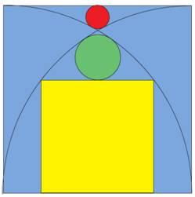

Desafíos para poner a prueba tu ingenio y ejercitar la resolución de problemas
- La venganza de Danielito
- Todo estaba bien con Andresito, Bartolito y Cachito hasta que apareció Danielito. ...correcto, otro enigma de cumpleaños.
- Andresito, Bartolito y Cachito se hicieron amigos con Danielito, y querían saber cuándo es su cumpleaños. Danielito dió una lista de 20 posibles fechas de nacimiento.
| 17 febrero 2001 |
16 marzo 2002 |
13 enero 2003 |
19 enero 2004 |
| 13 marzo 2001 |
15 abril 2002 |
16 febrero 2003 |
18 febrero 2004 |
| 13 abril 2001 |
14 mayo 2002 |
14 marzo 2003 |
19 mayo 2004 |
| 15 mayo 2001 |
12 junio 2002 |
11 abril 2003 |
14 julio 2004 |
| 17 junio 2001 |
16 agosto 2002 |
16 julio 2003 |
18 agosto 2004 |
- Danielito le dijo por separado a Andresito, Bartolito y Cachito el mes, el día y el año de su cumpleaños, respectivamente.
- Enseguida escuchamos la siguiente conversación:
- Andresito: No sé cuándo es el cumpleaños de Danielito, pero sé que Bartolito no lo sabe.
- Bartolito: Todavía no sé cuándo es el cumpleaños de Danielito, pero sé que Cachito aún no lo sabe.
- Cachito: Todavía no sé cuándo es el cumpleaños de Danielito, pero sé que Andresito aún no lo sabe.
- Andresito: Ahora sé cuando es el cumpleaños de Danielito.
- Bartolito: Ahora lo sé yo también.
- Cachito: Yo también.
En definitiva, cuando es el cumpleaños de Danielito?
- Aclaración: ni Andresito, ni Bartolito, ni Cachito saben nada al principio, aparte del hecho de que a Andresito le han dicho el mes, a Bartolito el día (es decir, el número del día), y a Cachito el año.
-
- Si tenés soluciones, pedidos de aclaración o consultas llena el formulario de consultas
-
- ¿Cuál es el número de Tanya?
- Tanya cuenta que pensó en un entero positivo menor que 100 y divisible por 7. Luego anuncia que en privado le dirá dígito unidad a Andresito y el dígito de las decenas a Bartolito. Andresito y Bartolito son dos chicos de pensamiento lógico. , aunque la conversación entre ellos pueda sonar extraña:
- Andresito: Bartolito no sabe cual es el número de Tanya.
- Bartolito: Ahora si lo sé.
- Conociendo lo que dijo uno y otro ¿Puedes decir cuál es ese número?
-
- Ver la solución
-
- La vuelta al mundo en un día
- Estamos planificando una carretera a construir sobre un paralelo situado en una latitud tal que circulando a 100 km/hora en forma constante se de la vuelta al mundo en un día exacto.
- Nos preguntamos ¿cuál es el paralelo?
-
- Las edades del matrimonio
- La suma de edades de un matrimonio es 91.
- El marido tiene ahora el doble de lo que tenía su esposa cuando el tenía la misma edad que ella tiene ahora.
- Qué edad tienen?
-
- El cumpleaños de Carlitos
- Albertito y Bernardito se acaban de hacer amigos de Carlitos y quieren saber cuándo es su cumpleaños. Carlitos les da una lista con 10 posibles fechas:
- Mayo 15, Mayo 16, Mayo 19
- Junio 17, Junio 18
- Julio 14, Julio 16
- Agosto 14, Agosto 15, Agosto 17
- Luego Carlitos les dice por separado a Albertito y a Bernardito, el mes y el día respectivamente, diciendose lo siguiente:
- -Albertito: "No sé cuándo es el cumpleaños de Carlitos, pero sé que Bernard tampoco lo sabe".
- -Bernardito: "Al principio no sabía cuándo era el cumpleaños de Carlitos, pero ahora ya lo sé".
- -Albertito: "Entonces yo también sé cuándo es su cumpleaños".
- ¿Cuándo es el cumpleaños de Carlitos?
-
- Días consecutivos
- Nombrar cinco días consecutivos sin utilizar las palabras lunes, martes, miércoles, jueves o viernes.
-
- 10 Presos
- 10 presos son encerrados en celdas individuales, incapaces de ver, hablar o comunicar de cualquier manera entre sí. Hay una sala de ejercicios con una sola luz, que es inicialmente apagada y la los presos no pueden ver la luz de su propia celda.
- Todos los días, el director elige un prisionero al azar que va a la sala de ejercicios.
- Una vez allí, el preso puede optar por encender la luz o apagado, y no se les permite dejar un mensaje.
- En cualquier momento, un preso puede afirmar que los 10 presos han estado en el gimnasio. Si está en un error, entonces los 10 prisioneros quedaran encerrados para siempre! Sin embargo, si son correctas todos los prisioneros son puestos en libertad.
- Antes de comenzar la selección al azar, a los presos se les permite discutir un plan. ¿Cuál es su mejor plan para determinar si todos los 10 prisioneros han visitado la sala de ejercicios?
- Acertijo
- Qué es lo que está hecho de nada y sin embargo se puede ver?
-
- Dividir en triángulos
- Se tiene un triángulo isósceles, con lados 3, 2 y 2. El ángulo entre los dos lados iguales es aproximadamente 97 grados. Obtusángulo.
- ¿Cómo se podrá cortar en una serie de pequeños triángulos que sean todos isósceles agudos (todos los ángulos menores de 90 grados)?
- Propuesto por Elliott Line en Puzzle SIG
-
Medir en el cuadrado
El lado del cuadrado celeste es L. ¿Cuánto miden los radios de las circunferencias roja y verde y el lado del cuadrado amarillo?.

Dividir un cuadrado
Partir un cuadrado mediante cortes rectos de forma tal que con los trozos resultantes se puedan componer diez cuadrados iguales.
Solución
El mejor triángulo
Partiendo de un trozo de papel cuadrado, plegarlo de manera tal que se obtenga el mayor triángulo equilátero posible.
Pijama party
Después de mucha insistencia Marta consiguió que su marido José organice un 'pijama party'.
Acordaron reunirse con otras cuatro parejas. Por lo tanto, iban a ser cinco parejas, o sea diez personas, en total.
A medida que llegaban al lugar de reunión, y, debido a que no todos se conocían entre si, hubo algunos apretones de manos y presentaciones que siguieron las siguientes reglas:
1. Cuando una persona no conoce a otra le da la mano.
2. La gente no se da la mano con alguien que ya conoce.
Una vez que estuvieron todos reunidos, José, afecto a las observaciones numéricas, pregunta a los demás, incluyendo a su propia esposa, cuántas manos estrechó cada uno. Recibe las siguientes respuestas: 0,1,2,3,4,5,6,7, y 8.
Y ahora la pregunta: ¿Cuántas manos estrechó Marta?
Numerando un cubo
Queremos identificar los vértices de un cubo con enteros no negativos y diferentes entre si.
Luego se asignará a cada arista la diferencia entre sus extremos según la numeración anterior; los números asignados a las aristas tambien deben ser diferentes entre sí.
¿Como se deben numerar los vértices para que la suma de los números correspondientes a las aristas resulte ser la menor posible?
Tuercas y Tornillos
Hay tres cajoneras de pescadores, de esas que pueden almacenar pequeños objetos. Cada cajonera tiene dos cajoncitos.
En una de las cajoneras cada cajón contiene un tornillo. En otra de las cajoneras cada cajón contiene una tuerca. En la tercer cajonera un cajón contiene una tuerca; el otro cajón contiene un tornillo.
Supongamos que abres uno cualquiera de los cajones de una de las cajoneras elegida al azar y encuentras un tornillo. ¿Que probabilidad hay de que en el otro cajón de la misma cajonera también halla un tornillo?
¿Local, empate o visitante?
Terminó el partido de futbol. Solamente Alejandro conocía el resultado.
Nos preguntó: ¿Como suponen que resultó para el prode: local, empate o visitante?
Un miembro del grupo aventuró: 'Para mi que no es visitante'
Otro lo siguió con: 'debe ser local o empate'
Un tercero sugirió: '...empate'
'Basta de suposiciones' dijo Alejandro. 'Estan en condiciones de deducirlo si les cuento que al menos uno está en lo cierto y al menos uno está equivocado.'
¿Como terminó el partido; local empate o visitante?
Una cuerda en la plaza
En la plaza hay dos estacas perfectamente verticales, separadas 1,70 metro entre si.
Una de las estacas tiene 2,00 metros de altura; la otra 1,30 metro.
Colgamos una cuerda de 2,40 metros entre los puntos más altos de cada estaca. De la cuerda vamos a colgar una pesa y pretendemos ubicarla en el lugar más bajo posible.
Queremos saber donde va a estar el punto buscado en relación con las estacas y a que altura va a quedar.
 arriba
arriba
El rombo mas grande
Se tiene un trozo de madera como el de la figura 1.
No hay forma de conocer sus medidas. No tenemos instrumentos de medición; solamente una hoja de papel que lo puede envolver por completo y unas tijeras.
Se lo quiere cortar de modo que la sección plana producida (la figura plana resultante del corte) sea un rombo de las mayores dimensiones posibles.
La figura 2 muestra un intento, pero no es la solución buscada.
¿Como se puede definir por donde debe pasar el serrucho?
 Figura 1
Figura 1
 Figura 2
Figura 2
El terreno en forma de L
Tengo una parcela de tierra en forma de L. Las seis esquinas son ángulos rectos perfectos, pero las longitudes son diferentes y, en ningún caso tengo forma de medirlos.
Todo lo que tengo son algunos palos que puedo clavar al suelo, y una cuerda común.
Deseo determinar la posición de una nueva cerca. La cerca debe ser una sola línea recta, y debe dividir el área de mi tierra exactamente en dos.
¿Cómo puedo lograr esto?
Parábola
Por la base de un cono recto circular de 80 cm de diámetro y 40 cm de altura pasa una recta 'r' a 20 cm de su centro. Por la recta 'r', a su vez, pasa un plano ubicado de forma tal que la sección plana producida en el cono resulta ser una parábola.
Se pregunta: ¿A que altura está el vértice de la parábola?
Observaciones: Existen dos soluciones.
Cuestión de seguridad
Me dedico a la seguridad y me identifican con 7 letras
Mi 123 es la forma generica de un buen amigo
Mi 45 es propio del desprendido
Mi 67 es una nota musical
Mi 3245 es nada
Si 2345 decimos que funciona
Como me llamo?
Amaneceres
¿Donde amanecerá antes el día 21 de diciembre, considerando estas dos ciudades: Rosario y Usuhaia?
Se que Ushuaia está a 54° 48' de latitud Sur y 68° 17' Longitud Oeste mientras que Rosario esta a 60º longitud oeste y 32º latitud sur.
El billete oculto
Un conocido me dice que ha ocultado un billete de $100 entre las páginas 75 y 76 del Manual del Constructor de Máquinas (Dubbel).
Al instante sé que es mentira - ¿Por qué?
El mástil del monumento
¿Como determinar la altura que tiene el mástil del monumento a la bandera disponiendo simplemente de una cinta métrica y útiles de dibujo?
Máquina lógica
¿Cual seria la pregunta que se debe formular a una maquina que siempre responde con la verdad para que aquella no pueda responder, teniendo en cuenta que la maquina solamente responde con 'Si' o con 'No', con luz verde para si, luz roja para no y sabiendo que la pregunta debe formularse de manera que se pueda responder solo con si o no.
Fuente: ®© pamm
Números de habitaciones
Cuando Zoilo Kefalta se hizo cargo del mantenimiento del viejo hotel tuvo que reponer los números identificatorios de todas las habitaciones, numeradas desde el 1 al 999. Al ordenar los materiales advirtió que faltaban todos los números "nueve".
¿Como les parece que razonó para deducir cuantos "nueve" debería comprar para identificar las habitaciones?
El Arbol Mágico
Había un árbol mágico, que durante el primer día aumentaba la mitad de su altura, el segundo día aumentaba en un tercio,el tercer día en un cuarto y así sucesivamente.
¿Cuántos días tardó en crecer hasta aumentar cién veces su altura original?
Naufrago en una isla
Te ha capturado un príncipe malvado, quien decide jugar contigo (con sus reglas, por supuesto).
Te ofrece liberarte elegiendo entre dos puertas: detrás de una de ellas te espera un león hambriento y detrás de la otra un tesoro que supera tus sueños más alocados. Cuidando una de las puertas hay un nativo que siempre miente y cuidando la otra puerta otro nativo que siempre dice la verdad. Desafortunadamente no se los puede distinguir. Se te permite pedir ayuda con una sola pregunta a uno de los guardias. Ambos saben cual es la puerta que cuidan.
¿Cual es la única pregunta que puedes formular para quedarte con tu libertad y las riquezas?
arriba